到目前为止，我们了解到没有两个模型会给出相同的结果。换句话说，不同的数据或算法组合会产生不同的结果。这种结果可能对某个特定组合有利，但对另一个组合就不那么有利了。如果我们有一个模型，试图将这些组合考虑在内，并得出一个通用的更好的结果，会怎么样？这被称为集合模型。
在这一章中，我们将学习一些关于集合建模的概念，如下所示:
有时，一个机器学习模型对于某个场景或用例来说不够好，因为它可能不会给你期望的准确度、召回率和精确度。因此，多个学习模型——或模型集合捕捉数据的模式并给出更好的输出。
举个例子，假设我们正试图决定一个我们夏天想去的地方。通常，如果我们正在计划一次旅行，关于这个地方的建议会从各个角落涌来。也就是说，这些建议可能来自我们的家人、网站、朋友和旅行社，然后我们必须根据我们过去的良好经历做出决定:
然而，我们必须积累所有之前的输入并做出决定，因为迄今为止没有任何来源是100%正确的。如果我们将这些结果结合起来，精确度方案将如下:
1 - (60% * 50% * 35% * 45%) 1- 0.04725 = 0.95275
# Accuracy is close to 95%.
由此，我们能够看到集合建模的影响。
主要有三种建立集合模型的方法，即打包、助推和堆叠:
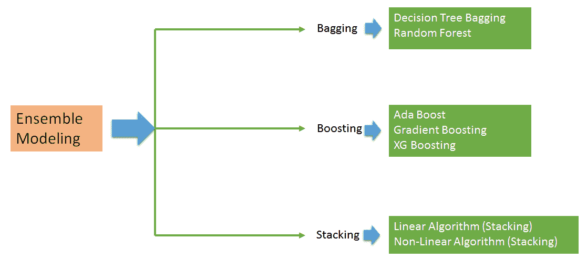
我们将逐一讨论每种方法。然而，在我们进入这个之前，我们需要了解什么是自举，它为装袋和助推奠定了基础。
Bootstrapping是一种统计技术，用于根据替换抽取的样本对总体参数进行推断，并对这些结果进行平均。在替换抽样的情况下，样本被一个接一个地抽取，一旦从总体中抽取一个样本，总体就被补充抽样数据:
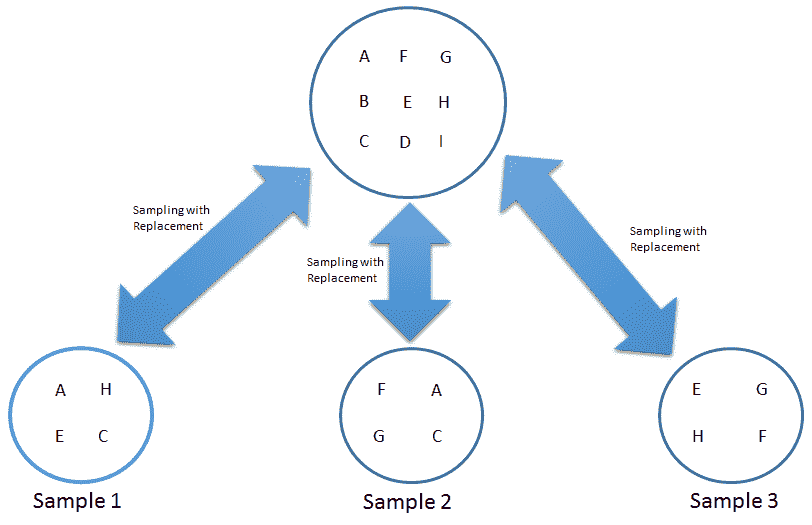
在上图中，有一个数据集有多个组件( A 、 B 、 C 、 D 、 E 、 F 、 G 、 H 和 I )。首先，我们需要画三个同样大小的样本。我们随机抽取样本1 说第一个元素原来是 A 。然而，在我们绘制第二个元素样本1 之前，一个被返回到数据集。整个抽奖过程也是如此。这被称为取样和替换。因此，我们有机会在集合中多次选择相同的项目。按照这个过程，我们抽取了三个样品，即样品1 、样品2 和样品3 。
当我们更进一步，确定样本1 、样本2 和样本3 的统计数据(各种指标)时，我们找出所有统计数据的平均值，以推断数据集(总体)的一些情况。这个整个过程被称为自举，抽取的样本被称为自举样本。这可以用下面的等式来定义:
关于数据集的推断(总体)=平均值(样本1，样本2，............，样本N)
如果您仔细观察前面的图表，可能会发现数据集的一些元素没有被选取，或者不是这三个样本的一部分:
样品1 : ( A 、 E 、 H 、 C )
让我们做一个简单的编码练习，看看如何在Python中实现这一点:
这里，我们将使用sklearn和resample函数。让我们导入必要的库:
#importing Libraries
from sklearn.utils import resample
dataset=[10,2
0,30,40,50,60,70,80,90,100]
#using "resample" function generate a bootstrap sample
boot_samp = resample(dataset, replace=True, n_samples=5, random_state=1)
#extracting OOB sample
OOB=[x for x in dataset if x not in boot_samp]
现在，让我们把它打印出来:
print(boot_samp)
我们可以看到在抽样中有一个60的重复。这是由于替换取样造成的。
[60, 90, 100, 60, 10]
接下来，我们需要打印以下代码:
print(OOB)
到此结束时，我们希望得到如下结果:
[20, 30, 40, 50, 70, 80]
OOB =数据集-启动_样本
=[10，20，30，40，50，60，70，80，90，100] - [60，90，100，60，10]
=【20，30，40，50，70，80】
这和我们从代码中得到的结果是一样的。
制袋材料
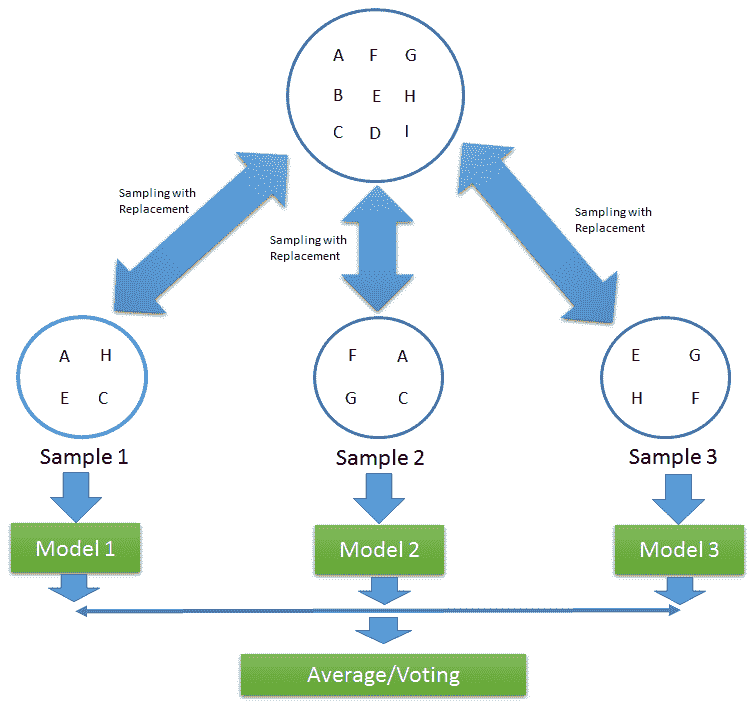
装袋有三个阶段:
自举 : 这是一种统计技术，用于生成随机样本或带有替换的自举样本。
决策图表
例如，假设我们有一个向银行申请贷款的人的样本。对于这个例子，我们将把计数作为50。在这里，我们得到了三个属性，即性别、收入和此人持有的其他贷款数量，以预测是否给他们贷款。
我们需要根据性别、收入和他们持有的其他贷款数量对这些人进行细分，并找出最重要的因素。这往往会创建最同质的集合。
让我们先来看看收入，并尝试在此基础上创造细分市场。申请贷款的总人数是50人。在50人中，有20人获得了贷款。但是，如果我们把这个按收入分解，我们可以看到，分解已经按收入<100,000 and > =10万完成了。这不会生成一个同质的组。我们可以看到40%的申请人(20人)获得了贷款。在收入低于10万英镑的人群中，30%的人设法获得了贷款。同样，收入大于或等于10万的人群中，有46.67 %的人设法获得了贷款。下图显示了基于收入的树拆分:
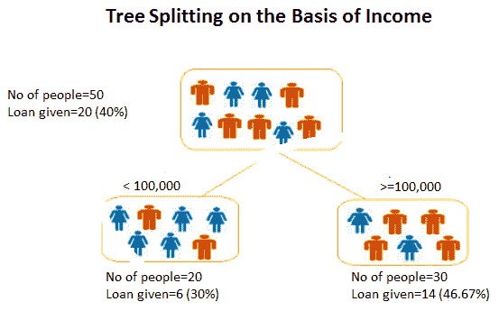
现在我们来看看贷款的数量。即使这一次，我们也无法看到一个同质群体的产生。下图显示了基于贷款数量的树拆分:
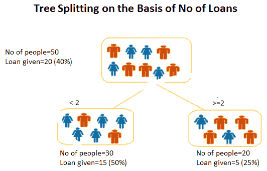
让我们继续讨论性别问题，看看它在创造一个同质群体方面表现如何。这就是同质群体。有15名女性，其中53.3%获得了贷款。34.3%的男性最终也获得了贷款。下图显示了基于性别的树拆分:
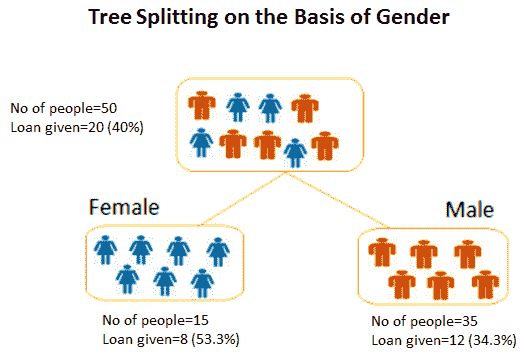
在此帮助下，找到了最重要的变量。现在，我们将详细讨论这些变量有多重要。
在此之前，我们必须了解与决策树相关的术语和命名法:
根节点:代表分裂成两个或更多同类组的整个群体或数据集
树木分裂
基尼指数(Gini index):这表示如果我们从总体中随机选择两个项目，它们必须来自同一个阶层。如果种群是完全纯的，这一事件的概率将会是1。它只执行二进制分割。分类回归树 ( 推车)就利用了这种拆分。
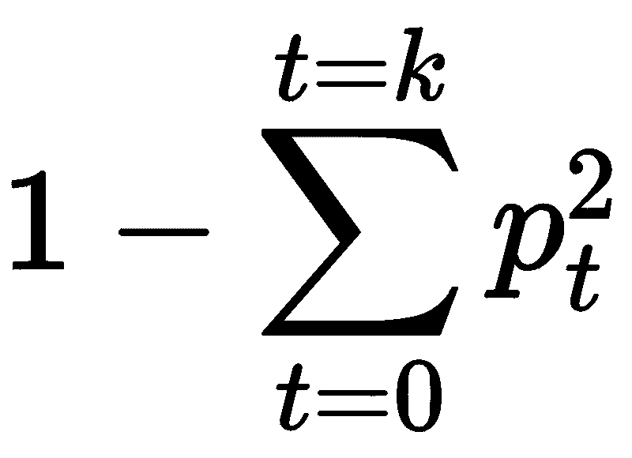
这里， p(t) 是目标变量的值为 t. 的观测值的比例
对于二元目标变量， t=1 ，最大基尼指数值如下:
= 1—(1/2)^2—(1/2)^2
= 1–2*(1/2)^2
= 1-2 *(1/4)
= 1–0.5
= 0.5
基尼系数给出了一个概念，通过分裂产生的两个群体中的阶级混合程度来判断分裂有多好。完美的分离导致基尼系数为0，而最坏的分离导致50/50的等级。
对于一个具有 k 水平的名义变量，基尼指数的最大值为 (1- 1/k)。
信息增益:我们来深究一下这个，看看到底是什么。如果我们碰巧有三个场景，如下图所示，哪个可以很容易的描述出来？
由于 Z 看起来相当均匀，并且它的所有值都相似，所以它被称为纯集合。因此，它需要较少的努力来解释它。然而， Y 需要更多的信息来解释，因为它不是纯的。X是他们中最不纯洁的。它试图传达的是，随机性和无组织性增加了复杂性，因此它需要更多的信息来解释。这种随机程度被称为熵。如果样本是完全同质的，那么熵就是 0 。如果样本被等分，它的熵将是 1 :
熵=-p log2p-q log2q
这里， p 表示成功的概率， q 表示失败的概率。
熵也用于分类目标变量。它挑选与父节点相比具有最低熵的分裂。
在这里，我们必须先计算父节点的熵。然后，我们需要计算被分割的每个节点的熵，并发布出来，包括所有子节点的加权平均值。
方差减少:对于连续的目标变量，使用方差减少。这里，我们使用方差来决定最佳分割。选择差异最小的拆分作为拆分标准:
这里，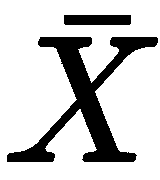是所有值的平均值， X，是真实值， n 是值的个数。
首先计算每个节点的方差，然后加权平均每个节点的方差，使我们选择最佳节点。
树木分裂参数
Max_depth:最重要的参数之一是max_depth。它抓住了树能有多深的本质。树中更深的深度意味着它能够从特征中提取更多的信息。然而，有时，过度的深度可能是一个令人担忧的原因，因为它往往会带来过度拟合。
随机森林算法
训练集中有 N 个观测值。从 N 个观察值中随机抽取样本，并进行替换。这些样本将作为不同树的训练集。
预测是基于所有树产生的结果的集合而发生的。在分类的情况下，聚合的方法是投票，而在回归的情况下，它是所有结果的平均值:
让我们做一个案例研究，因为这将帮助我们更详细地理解这个概念。让我们研究乳腺癌数据。
Let's work on a case study, since that will help us understand this concept more in detail. Let's work on breast cancer data.
个案研究
恶性的
导入所有需要的库:
import numpy as np
import pandas as pd
import seaborn as sns
import matplotlib.pyplot as plt
%matplotlib inline
from sklearn import preprocessing
from sklearn.model_selection import train_test_split
from sklearn.metrics import confusion_matrix
#importing our parameter tuning dependencies
from sklearn.model_selection import (cross_val_score, GridSearchCV,StratifiedKFold, ShuffleSplit )
#importing our dependencies for Feature Selection
from sklearn.feature_selection import (SelectKBest, RFE, RFECV)
from sklearn.ensemble import ExtraTreesClassifier
from sklearn.cross_validation import ShuffleSplit
from sklearn.ensemble import RandomForestClassifier
from sklearn.metrics import f1_score
from collections import defaultdict
# Importing our sklearn dependencies for the modeling
from sklearn.ensemble import RandomForestClassifier
from sklearn.preprocessing import StandardScaler
from sklearn.cross_validation import KFold
from sklearn import metrics
from sklearn.metrics import (accuracy_score, confusion_matrix,
classification_report, roc_curve, auc)
data= pd.read_csv("breastcancer.csv")
data.info()
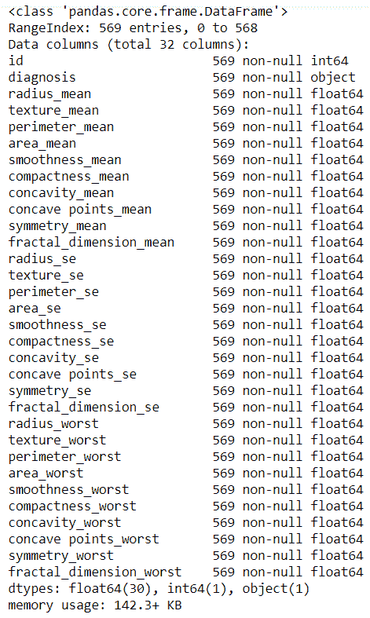
让我们在这里考虑data.head():
data.head()
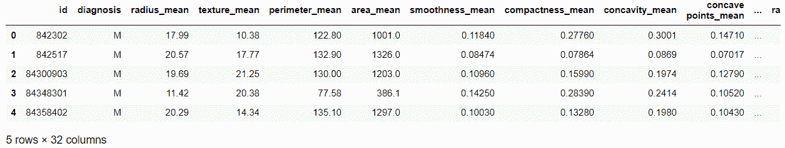
我们从下面的代码中得到数据诊断:
data.diagnosis.unique()
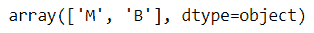
数据描述如下:
data.describe()
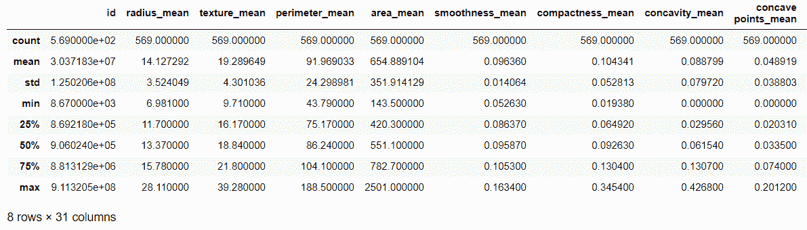
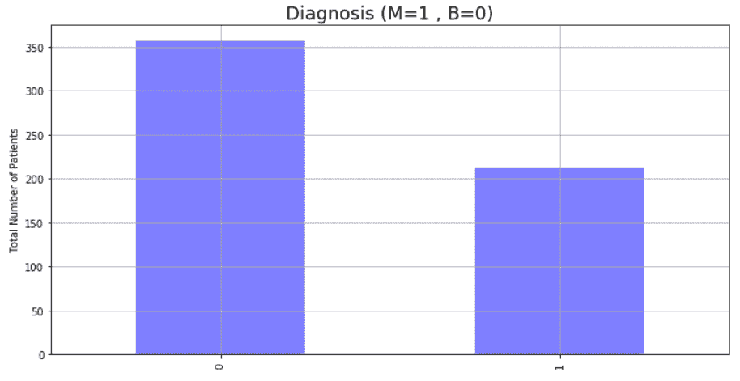
data['diagnosis'] = data['diagnosis'].map({'M':1,'B':0})
datas = pd.DataFrame(preprocessing.scale(data.iloc[:,1:32]))
datas.columns = list(data.iloc[:,1:32].columns)
datas['diagnosis'] = data['diagnosis']
datas.diagnosis.value_counts().plot(kind='bar', alpha = 0.5, facecolor = 'b', figsize=(12,6))
plt.title("Diagnosis (M=1, B=0)", fontsize = '18')
plt.ylabel("Total Number of Patients")
plt.grid(b=True)
data_mean = data[['diagnosis','radius_mean','texture_mean','perimeter_mean','area_mean','smoothness_mean', 'compactness_mean', 'concavity_mean','concave points_mean', 'symmetry_mean', 'fractal_dimension_mean']]
plt.figure(figsize=(10,10))
foo = sns.heatmap(data_mean.corr(), vmax=1, square=True, annot=True)
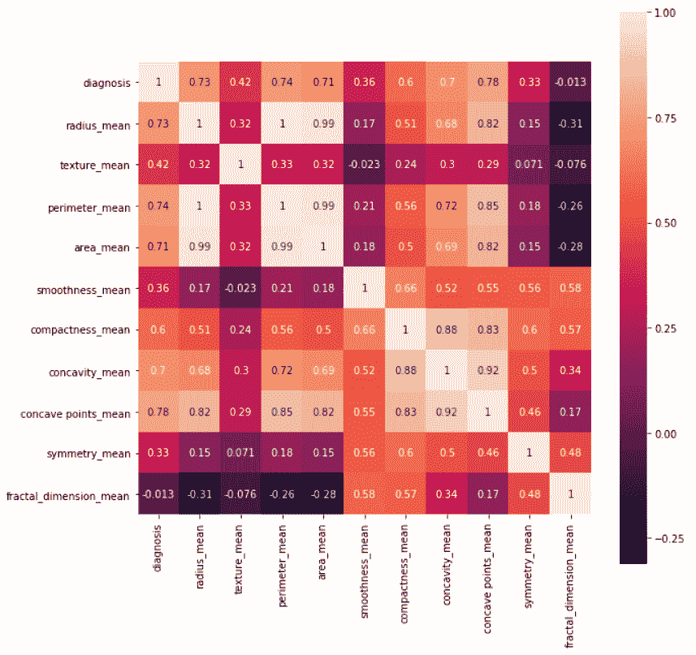
前面的输入为我们提供了以下输出:
from sklearn.model_selection import train_test_split, cross_val_score, cross_val_predict
from sklearn import metrics
predictors = data_mean.columns[2:11]
target = "diagnosis"
X = data_mean.loc[:,predictors]
y = np.ravel(data.loc[:,[target]])
# Split the dataset in train and test:
X_train, X_test, y_train, y_test = train_test_split(X, y, test_size=0.2, random_state=0)
print ('Shape of training set : %i & Shape of test set : %i' % (X_train.shape[0],X_test.shape[0]) )
print ('There are very few data points so 10-fold cross validation should give us a better estimate')
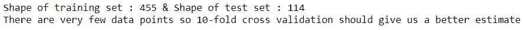
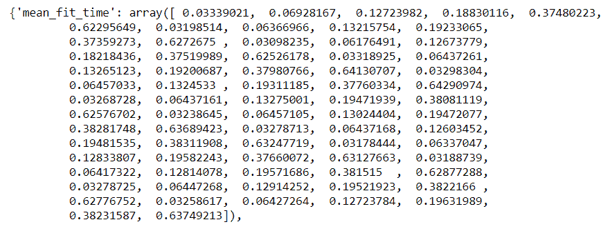
param_grid = {
'n_estimators': [ 25, 50, 100, 150, 300, 500],
"max_depth": [ 5, 8, 15, 25],
"max_features": ['auto', 'sqrt', 'log2']
}
#use OOB samples ("oob_score= True") to estimate the generalization accuracy.
rfc = RandomForestClassifier(bootstrap= True, n_jobs= 1, oob_score= True)
#let's use cv=10 in the GridSearchCV call
#performance estimation
#initiate the grid
grid = GridSearchCV(rfc, param_grid = param_grid, cv=10, scoring ='accuracy')
#fit your data before you can get the best parameter combination.
grid.fit(X,y)
grid.cv_results_
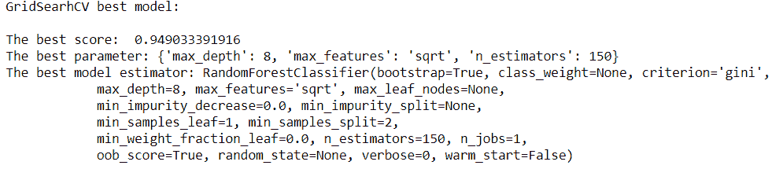
# Let's find out the best scores, parameter and the estimator from the gridsearchCV
print("GridSearhCV best model:\n ")
print('The best score: ', grid.best_score_)
print('The best parameter:', grid.best_params_)
print('The best model estimator:', grid.best_estimator_)
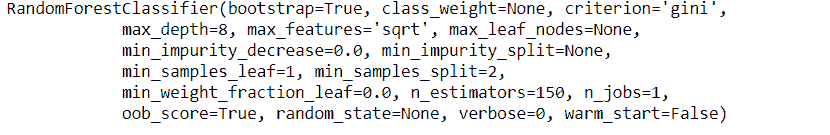
# model = RandomForestClassifier() with optimal values
model = RandomForestClassifier(bootstrap=True, class_weight=None, criterion='gini',
max_depth=8, max_features='sqrt', max_leaf_nodes=None,
min_impurity_decrease=0.0, min_impurity_split=None,
min_samples_leaf=1, min_samples_split=2,
min_weight_fraction_leaf=0.0, n_estimators=150, n_jobs=1,
oob_score=True, random_state=None, verbose=0, warm_start=False)
model.fit(X_train, y_train)
由此可见，测试数据上的性能精度为95.0:
print("Performance Accuracy on the Testing data:", round(model.score(X_test, y_test) *100))
在这里，总预言是114:
#Getting the predictions for X
y_pred = model.predict(X_test)
print('Total Predictions {}'.format(len(y_pred)))
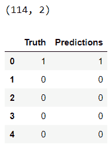
truth = pd.DataFrame(y_test, columns= ['Truth'])
predictions = pd.DataFrame(y_pred, columns= ['Predictions'])
frames = [truth, predictions]
_result = pd.concat(frames, axis=1)
print(_result.shape)
_result.head()
由此可见，10 k倍交叉验证均值为94.9661835749:
# 10 fold cross-validation with a Tree classifier on the training dataset# 10 fold
#splitting the data, fitting a model and computing the score 10 consecutive times
cv_scores = []
scores = cross_val_score(rfc, X_train, y_train, cv=10, scoring='accuracy')
cv_scores.append(scores.mean())
cv_scores.append(scores.std())
#cross validation mean score
print("10 k-fold cross validation mean score: ", scores.mean() *100)
这里我们可以看到分类精度是95.0:
# printing classification accuracy score rounded
print("Classification accuracy: ", round(accuracy_score(y_test, y_pred, normalize=True) * 100))
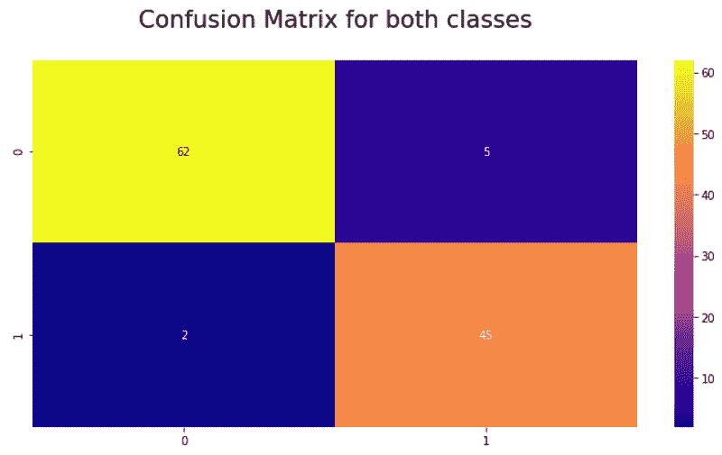
# Making the Confusion Matrix
cm = confusion_matrix(y_test, y_pred)
plt.figure(figsize=(12,6))
ax = plt.axes()
ax.set_title('Confusion Matrix for both classes\n', size=21)
sns.heatmap(cm, cmap= 'plasma',annot=True, fmt='g') # cmap
plt.show()
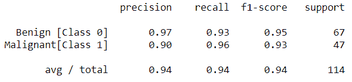
# The classification Report
target_names = ['Benign [Class 0]', 'Malignant[Class 1]']
print(classification_report(y_test, y_pred, target_names=target_names))
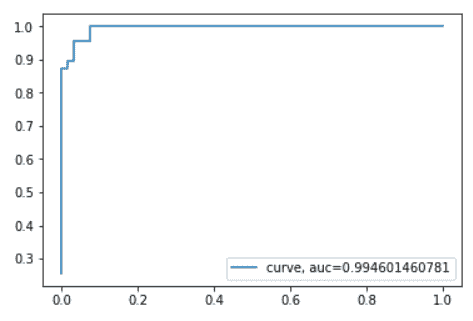
y_pred_proba = model.predict_proba(X_test)[::,1]
fpr, tpr, _ = metrics.roc_curve(y_test, y_pred_proba)
auc = metrics.roc_auc_score(y_test, y_pred_proba)
plt.plot(fpr,tpr,label="curve, auc="+str(auc))
plt.legend(loc=4)
plt.show()
上图是一个接收器操作特性 ( ROC )度量，用于使用交叉验证评估分类器输出质量。
前面的图显示了对我们选择的特征(['compactness_mean', 'perimeter_mean', 'radius_mean', 'texture_mean', 'concavity_mean', 'smoothness_mean'])的ROC反应和从k倍交叉验证中创建的诊断相关变量。
0.99的一个ROC区挺好的。
助推
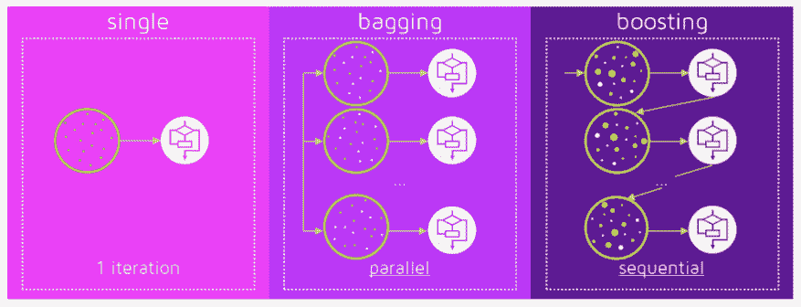
梯度推进
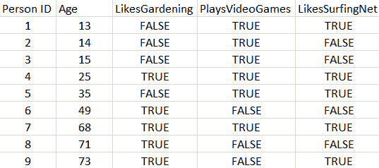
为了建立这个模型，目标是最小化均方误差。
现在，我们将使用回归树构建模型。首先，如果我们希望在训练节点上至少有三个样本，树的第一次拆分可能如下所示:
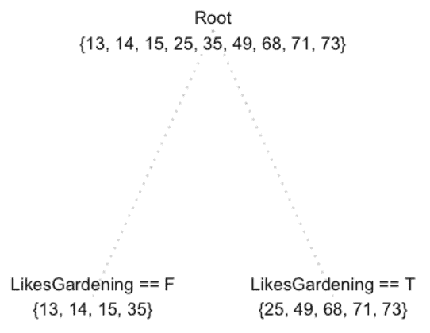
这似乎没问题，但这不包括他们是否玩视频游戏或浏览互联网等信息。如果我们计划在训练节点有两个样本呢？
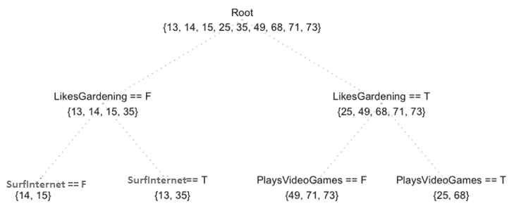
通过前面的树，我们能够从特征中获得某些信息，例如 SurfInternet 和 PlaysVideoGames 。让我们弄清楚残差/误差是如何产生的:
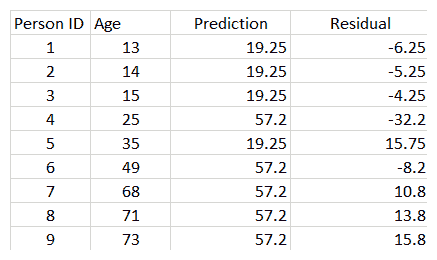
现在，我们将处理第一个模型的残差:
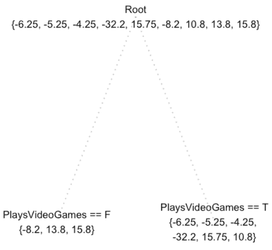
一旦我们建立了残差模型，我们必须将以前的模型与当前的模型结合起来，如下表所示:
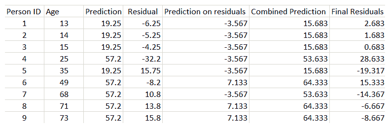
我们可以看到残差下降了，模型变得更好了。
让我们试着阐述一下到目前为止我们已经做了什么:
首先，我们在数据 f 1 (x) = y. 上建立一个模型
接下来就是结合模型，即f2(x)= f1(x)+h1(x)。
f3(x)= f2(x) + h2(x)
该等式最终将如下所示:
fm(x)= fm-1(x)+hm-1(x)
或者，我们可以这样写:
hm(x)= y-fm(x)
由于我们的任务是最小化平方误差， f 将用训练目标值的平均值初始化:
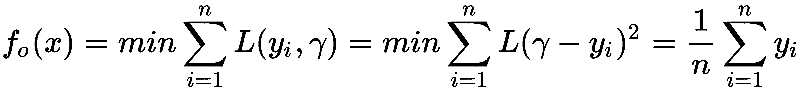
fm(x)= fmT19】-1(x)+hm-1(x)
我们修改了梯度推进算法，使其适用于任何可微损失函数。让我们清理前面的想法，并再次重新制定我们的梯度推进模型。
梯度推进参数
在对乳腺癌用例应用梯度增强之前，需要考虑不同的参数:
Min_samples_leaf:终端或叶节点所需的最小样本数称为min_samples_leaf。
现在，我们将对乳腺癌用例应用梯度增强。这里，我们正在加载构建模型所需的库:
我们现在已经完成了执行随机森林时数据清理和探索的各个步骤。现在，我们将直接开始构建模型。
这里，我们将执行网格搜索，找出梯度推进算法的最佳参数:
from sklearn.ensemble import GradientBoostingClassifier
from sklearn.metrics import classification_report, confusion_matrix, roc_curve, auc
我们得到以下输出:
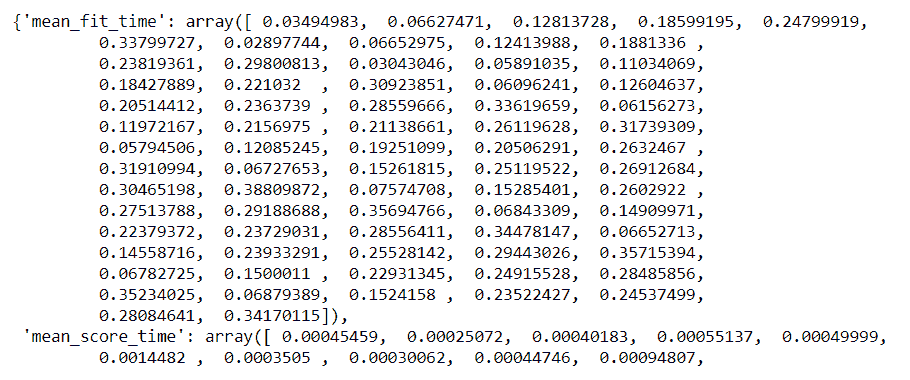
param_grid = {
'n_estimators': [ 25, 50, 100, 150, 300, 500], # the more parameters, the more computational expensive
"max_depth": [ 5, 8, 15, 25],
"max_features": ['auto', 'sqrt', 'log2']
}
gbm = GradientBoostingClassifier(learning_rate=0.1,random_state=10,subsample=0.8)
#performance estimation
#initiate the grid
grid = GridSearchCV(gbm, param_grid = param_grid, cv=10, scoring ='accuracy')
#fit your data before you can get the best parameter combination.
grid.fit(X,y)
grid.cv_results_
We get the following output:
现在，让我们找出最佳参数:
输出如下所示:
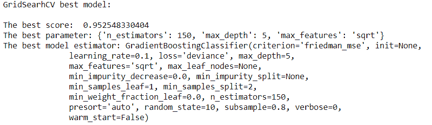
#Let's find out the best scores, parameter and the estimator from the gridsearchCV
print("GridSearhCV best model:\n ")
print('The best score: ', grid.best_score_)
print('The best parameter:', grid.best_params_)
print('The best model estimator:', grid.best_estimator_)
现在，我们将构建模型:
测试数据的性能精度为96.0:
预测总数为114:
model2 = GradientBoostingClassifier(criterion='friedman_mse', init=None,
learning_rate=0.1, loss='deviance', max_depth=5,
max_features='sqrt', max_leaf_nodes=None,
min_impurity_decrease=0.0, min_impurity_split=None,
min_samples_leaf=1, min_samples_split=2,
min_weight_fraction_leaf=0.0, n_estimators=150,
presort='auto', random_state=10, subsample=0.8, verbose=0,
warm_start=False)
model2.fit(X_train, y_train)
print("Performance Accuracy on the Testing data:", round(model2.score(X_test, y_test) *100))
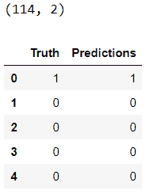
#getting the predictions for X
y_pred2 = model2.predict(X_test)
print('Total Predictions {}'.format(len(y_pred2)))
让我们进行交叉验证:
truth = pd.DataFrame(y_test, columns= ['Truth'])
predictions = pd.DataFrame(y_pred, columns= ['Predictions'])
frames = [truth, predictions]
_result = pd.concat(frames, axis=1)
print(_result.shape)
_result.head()
10 k倍交叉验证平均得分为94.9420289855:
分类精度为96.0:
cv_scores = []
scores2 = cross_val_score(gbm, X_train, y_train, cv=10, scoring='accuracy')
cv_scores.append(scores2.mean())
cv_scores.append(scores2.std())
#cross validation mean score
print("10 k-fold cross validation mean score: ", scores2.mean() *100)
The 10 k-fold cross-validation mean score is 94.9420289855:
#printing classification accuracy score rounded
print("Classification accuracy: ", round(accuracy_score(y_test, y_pred2, normalize=True) * 100))
The classification accuracy is 96.0:
# Making the Confusion Matrix
cm = confusion_matrix(y_test, y_pred2)
plt.figure(figsize=(12,6))
ax = plt.axes()
ax.set_title('Confusion Matrix for both classes\n', size=21)
sns.heatmap(cm, cmap= 'plasma',annot=True, fmt='g') # cmap
plt.show()
通过查看混淆矩阵，我们可以看到这个模型比前一个模型更好:
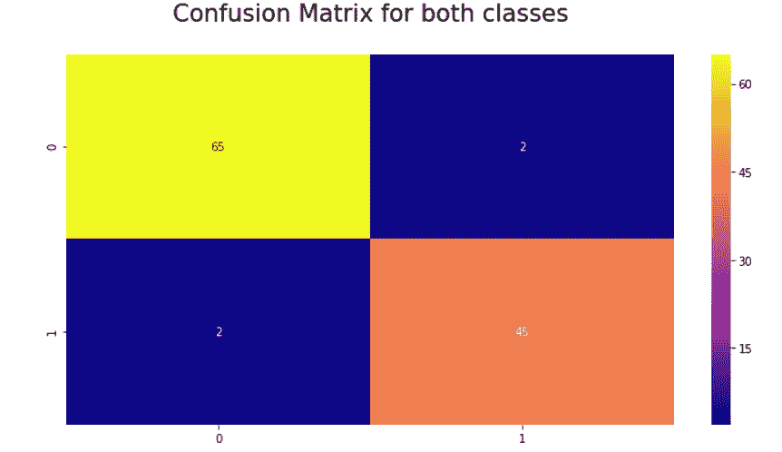
摘要
在这一章中，我们学习了集成学习及其不同的方法，即打包、提升和堆叠。我们甚至看到了什么是bootstrapping，这是bagging和boosting等集成学习方法的根源。我们还学习了决策树及其分而治之的方法，例如人们申请贷款。然后我们讨论了树分裂和分裂决策树的参数，接着讨论随机森林算法。我们使用所涵盖的概念对乳腺癌进行了案例研究。我们还发现了装袋增压和梯度增压的区别。我们还讨论了梯度增强的参数，以乳腺癌为例。
In this chapter, we studied ensemble learning and its different methods, namely bagging, boosting, and stacking. We even saw what is bootstrapping which is the root for ensemble learning methods such as bagging and boosting. We also learned about decision trees and its approach of divide and rule with example of people applying for loan. Then we covered tree splitting and the parameters to split a decision tree, moving on to the random forest algorithm. We worked on a case study of breast cancer using the concepts covered. We also discovered the difference between bagging and boosting and gradient boosting. We also discussed on parameters of gradient boosting to use it our example of breast cancer.
In the next chapter, we will learn about training neural networks.